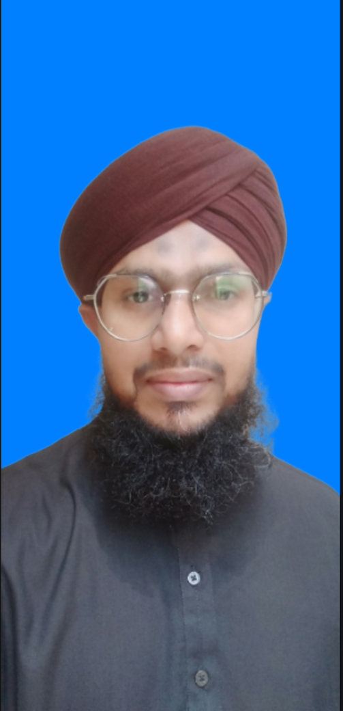

My cv

Shahid Bapu
Qualification
- Matriculation (Computer Science) From Board of Punjab
- Master's (Islamiat) From Board of Kanzul Madaris
- Master's (Arabic Islamiat) From Board of Tanzeem Ul Madaris
- Arabic Alim Fazil Equal To BA
Computer Skills
Experience:-
- 15 Years Teaching experience (Nazra QURAN)
- 04 Years working experience as a Video Editor
- 11 Years working experience as a Mufatish (MADANI CHANNEL)
Personal Information
- Father Name: Sultan Ahmed
- Date Of Birth: 03-01-1985
Contact US
- Email Address: Shahidbapu1@gmail.com